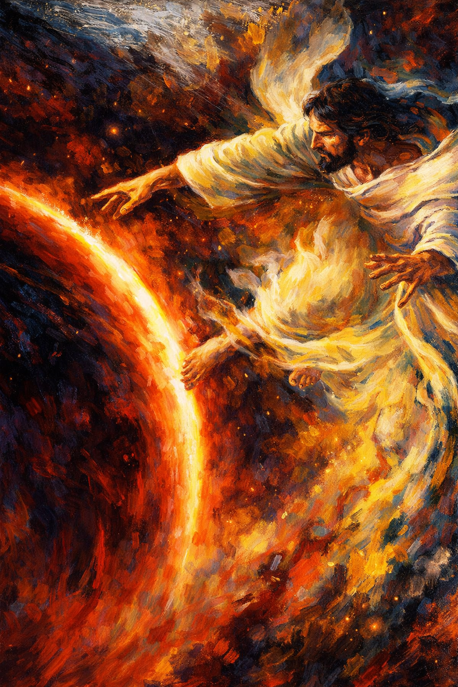
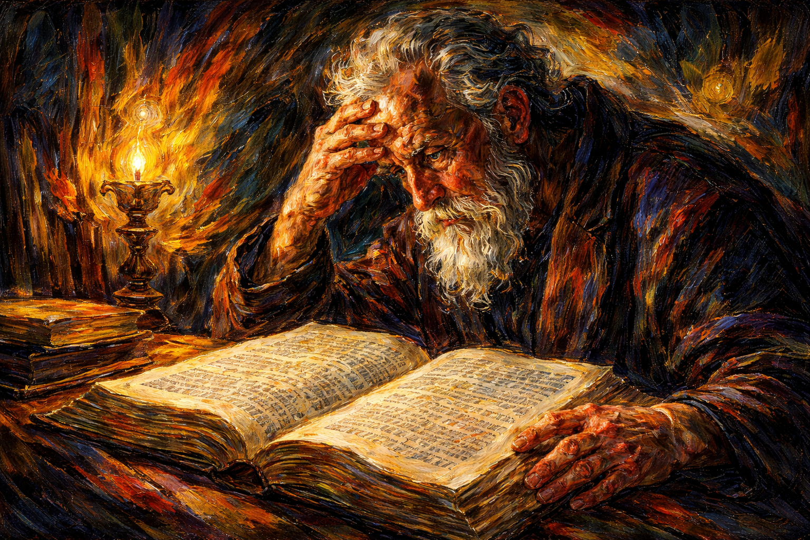
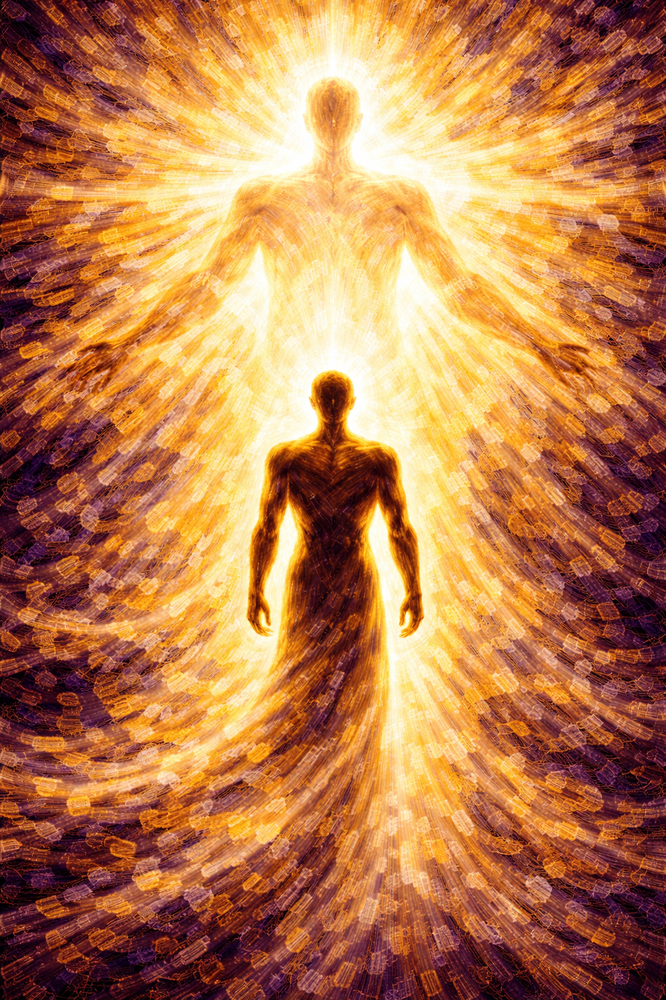
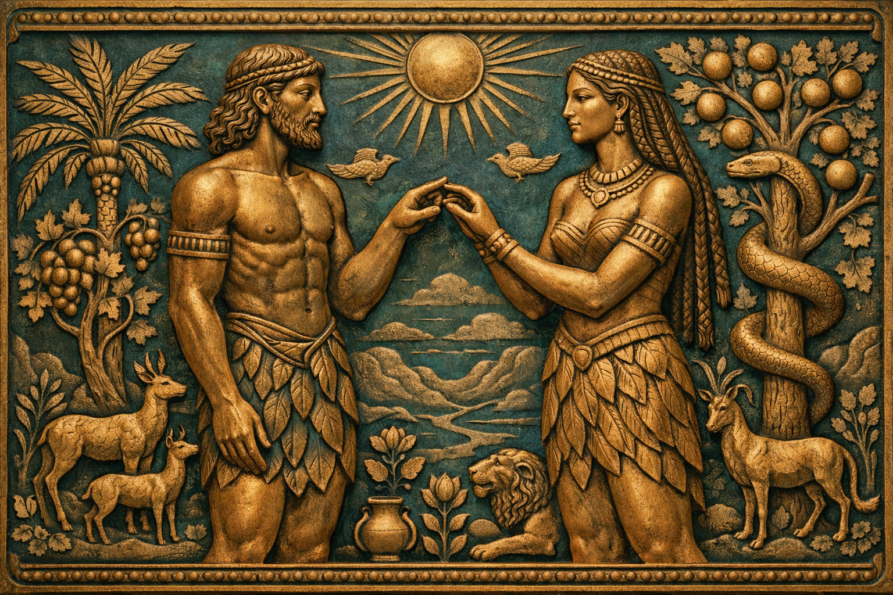
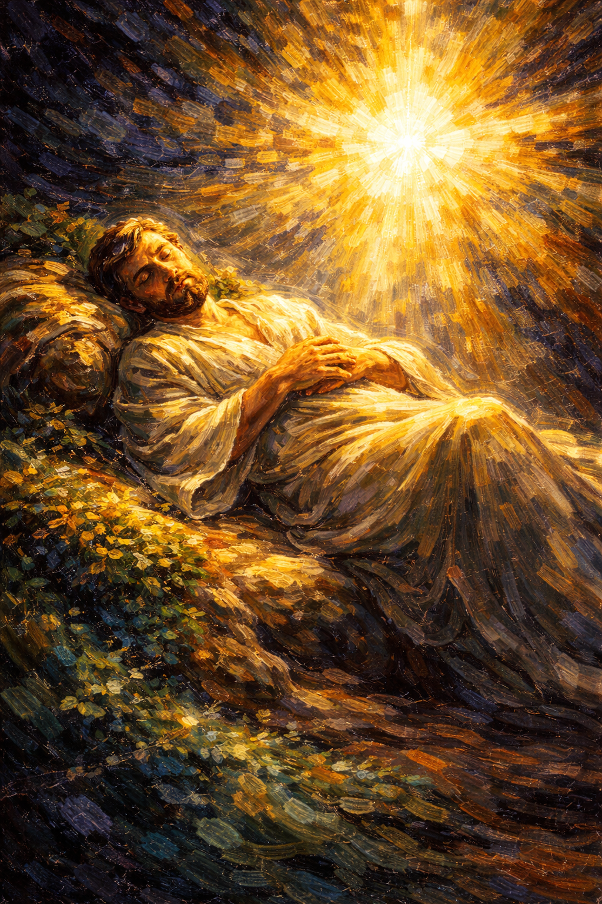

January 12–18, 2026
Each witness adds unique insights to help us understand why we were created.

Let's Read: Moses 2:1
"By mine Only Begotten I created these things"
The Creator and the Redeemer are the same person. He who made the mountains also descended below all things.

What does it mean to you that Christ is both your Creator and your Redeemer?
⏱ Take 60 seconds to write down your answer before we discuss.
Let's Read: Genesis 1:2 and Abraham 4:2
The earth was "without form, and void" ... "empty and desolate"
Yet God transformed it into something magnificent.
The Hebrew tohu va-vohu (formless and void) describes primordial chaos. God organized existing matter into beauty.
When has your life felt chaotic? How did (or could) the Lord bring order?
⏱ Take 60 seconds to write down your answer before we discuss.

Let's Read: Genesis 1:26–27
"So God created man in his own image, in the image of God created he him"
We are literally created in God's image. This gives every person inherent worth and divine potential.
How does knowing you're created in God's image affect how you see yourself and others?
⏱ Take 60 seconds to write down your answer before we discuss.
While you watch, listen for themes of identity and worth.
I am not an accident of nature.
I am a deliberate creation of God,
with divine worth and divine potential.

Let's Read: Genesis 2:18
"I will make him an help meet [ezer kenegdo]"
Ezer = "strong helper" (used for God helping His people)
Kenegdo = "equal partner, corresponding to him"
"Fathers and mothers are obligated to help one another as equal partners." — Family Proclamation
How does ezer kenegdo change your understanding of marriage?
⏱ Take 60 seconds to write down your answer before we discuss.
Let's Read: Genesis 1:28
"Replenish the earth, and subdue it: and have dominion"
The Hebrew radah implies caring governance—like a shepherd, not a tyrant. We are stewards, not owners.
D&C 121: dominion by "persuasion, long-suffering, gentleness, meekness, and love"
What does righteous "dominion" look like vs. exploitation? Give one example.
⏱ Take 60 seconds to write down your answer before we discuss.

Let's Read: Genesis 2:2–3
"God ... rested on the seventh day ... and sanctified it"
God didn't rest because He was tired—He rested to establish a pattern for us. The Sabbath is a gift, not a burden.
President Nelson invites us to make it a "delight"
What makes the Sabbath "blessed" or delightful to you personally?
⏱ Take 60 seconds to write down your answer before we discuss.
I am not an accident of nature.
I am a deliberate creation of God,
with divine worth and divine potential.
Because I know I am created in God's image,
this week I choose to __________________.
Complete this sentence in your study guide.